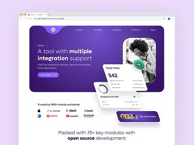

AI & AUTOMATION
Connect warehouses and wikis — then let agents act on what they find.

What’s inside
Your data never leaves your region.
Ask once, actions run everywhere.
Every step logged and reversible.